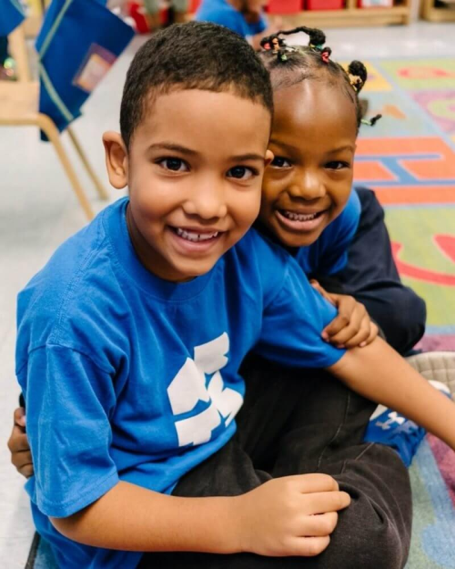
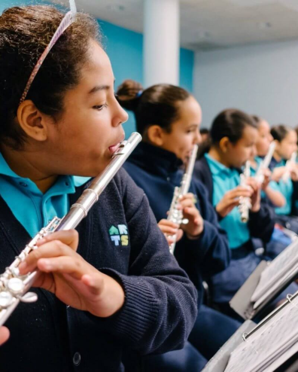

Creativity
starts here
is a public Elementary and Middle School founded on the principle that a rich and vibrant background in the arts is a key catalyst for the academic and social success of all students.
A community of
engaged
& inspired learners
Students receive daily instruction in theater, dance, music, and visual arts, and lessons in these subjects are integrated into the academic curriculum. We strive to serve as a model that encourages creativity and innovation in the classroom and inspires students to develop the intellectual and personal fortitude to realize their dreams.
Elementary
School
We believe access to artistic expression has the power to transform lives, and at Bronx Arts Elementary, it is a priority that every student has that opportunity. Our responsive classrooms ensure students are engaged and supported through social-emotional learning and meaningful relationships. Rigorous, engaging, and relevant curriculum encourages students to be creative and collaborative as they expand their critical thinking skills to immerse themselves in the discovery of new ideas.
Middle
School
“We are not a school with a good arts program, we are an arts school.”
– Ryan McCabe, Bronx Arts Middle School Principal
Bronx Arts Middle School strives to prepare our students for the future. We create an environment for success by supporting the holistic needs of our students. We place a strong emphasis on social-emotional learning while challenging students to realize their potential through our rigorous and relevant curriculum. Bronx
Access to
opportunity
We strongly believe that all students deserve the opportunity to demonstrate excellence and that all children can and will succeed when given optimal support and guidance.
Our Inclusion Program provides students with special needs the opportunity to be educated in a general education environment with supplemental support, and our commitment to meeting the instructional needs of all students is further supported by small class size and a school day that is thirty minutes longer than that of most schools.